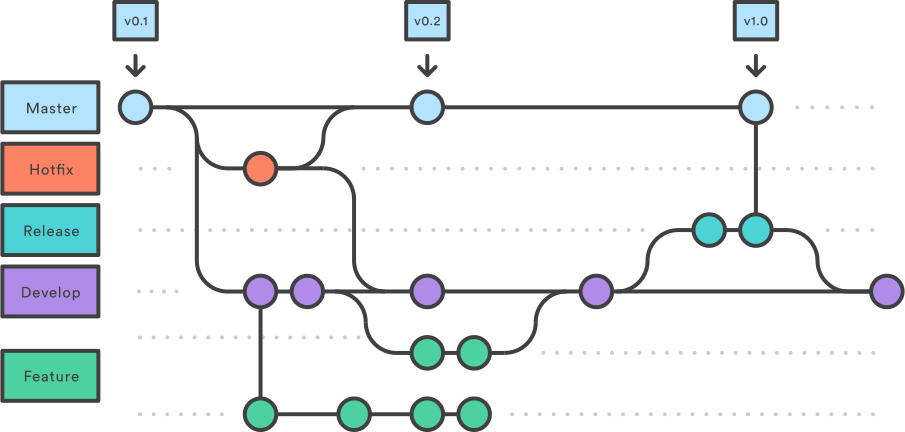

Controlando Versiones con Git
Estruja cada comando
 Ximena Garcia
Ximena Garcia
Full Stack Developer

Control de Versiones
Signos de que podrías necesitarlo
- Archivos con fechas en sus nombres
- Archivos con 'ultimo'/'posta'/'elQueVale'/'viejo'/'anterior' en sus nombres
- Cadenas de emails con zips/rars/tars como adjunto a todo el equipo (en la que nunca podes encontrar la ultima versión)
- Dolor de cabeza al unir los cambios de dos personas que trabajaron en paralelo
- Y muchos otros...
Sistemas de Control de Versiones (VCS)
- Guardan los cambios que un directorio y sus archivos sufren durante el transcurso de un proyecto
- Permiten identificar cuando se introdujeron las modificaciones, quien las introdujo, cuales archivos cambiaron, como cambiaron esos archivos y el por que de dichos cambios
- Permiten volver atrás cambios en caso de que se hayan generado errores (y saber a quien hecharle la culpa)
- Facilitan el trabajo en equipo evitando situaciones comunes como las ya mencionadas
O como Linus nos soluciono muchos problemas
Breve historia
Git nace en 2005 para cubrir las necesidades del equipo de desarrollo del Kernel de Linux.
Las principales características que se buscaron fueron:
- Velocidad
- Simpleza en el diseño
- Fuerte soporte para el desarrollo no-lineal (muchas ramas paralelas)
- Completamente distribuido
- Capaz de manejar grandes proyectos eficientemente
Git en pocas palabras
Olvida todos los otros VCSs
- Diferencias vs Instantáneas
Git creara una instantanea de los archivos en cada commit.
- Operaciones locales
Casi todas las operaciones en Git se pueden hacer offline.
- Integridad
Todo en Git se encuentra validado por una 'suma de verificación' o 'checksum' (HASH generado mediante SHA-1) basado en cada archivo que se encuentra bajo control de versiones.
- Agregado de información
Git suele solamente agregar información a su base de datos, lo cual permite deshacer facilmente las operaciones.
5. Los tres estados
- Modificado - Uno o varios archivos tienen cambios pero aun no fueron guardados en la base de datos local
- "En escena" (Staged) - Uno o varios archivos que poseen cambios están a la espera de que se les haga una instantánea
- "Enviado"/"Guardado" (Committed) - Una instantánea de los archivos se encuentran guardados en la base de datos local

Instalando y configurando Git
Disponible para:
Configuraciones básicas
$ git config --global user.name "Cosme Fulanito"
$ git config --global user.email cosmefulanito@ejemplo.com
Operaciones básicas
Creando repositorios
-
Utilizando un repositorio local nuevo
# Repositorio local $ git init `nombre` -
Clonando un repositorio remoto ya existente
$ git clone `url`
Agregando archivos al control de versiones
Una vez creado el repositorio, querremos hacer cambios y generar nuevos commits para guardar instantáneas de los archivos. Git posee 5 estados para los archivos dentro de un repositorio:

Agregando archivos al control de versiones
# Creamos un archivo
$ touch README.md
# Vemos el estado del repositorio
$ git status
# Agregamos el archivo al stage
$ git add README.md
# Generamos un commit con un mensaje
$ git commit -m "Creado archivo README"
Con eso ya hemos generado una instantánea de nuestro archivo vacío. Podremos seguir trabajando con el mismo e ir generando nuevos commits a medida que avanzamos
Revisando commits
# Historial de commits en la consola
$ git log
# Historial de commits en la consola un poco mas ameno a los ojos
$ git log --pretty=format:'%h %ad | %s%d [%an]' --graph --date=short
# Interfaz gráfica (requiere dependencias adicionales)
$ gitk
$ gitg
Sacándole el jugo a Git
Workflow básico al trabajar en equipo
Utilizando repositorios remotos
Para poder utilizar Git de manera colaborativa, es necesario poseer un repositorio remoto al cual todos los participantes del proyecto tengan acceso.
# Listar repositorios remotos
$ git remote -v
# Agregar repositorios remotos
$ git remote add `nombre-remoto` `url`
# Obtener la informacion que se encuentra en el repositorio remoto
$ git fecth `nombre-remoto`
# Obtener la informacion que se encuentra en el repositorio remoto y agregar dichos cambios a los nuestros
$ git pull `nombre-remoto`
# Publicando cambios en los repositorios remotos
$ git push -u `nombre-remoto` `nombre-rama`
El asunto de las Ramas
Utilizamos las ramas para separarnos del desarrollo principal, probar cambios, desarrollar funcionalidades o mantener separado lo 'estable' de lo que no lo es.
# Ver la rama actual
$ git branch
# Crear nueva rama
$ git branch `nombre-branch`
# Cambiar a esa rama
$ git checkout `nombre-branch`
# Alternativamente, crear y cambiar a esa rama al mismo tiempo
$ git checkout -b `nombre-branch`
Uniendo cambios
Una vez que nuestra rama separada haya cumplido su funcionalidad, querremos re-integrarla a nuestra rama principal o a alguna otra rama dentro de nuestro repositorio
# Volvemos a la rama principal
$ git checkout master
# Integramos los cambios de la otra rama
$ git merge --no-ff `nombre-branch`
# Borramos la rama
$ git branch -d `nombre-branch`
Resolviendo conflictos
Cuando Git no puede unir los cambios de manera automática, nos delegara la responsabilidad de resolver los conflictos manualmente. Luego tendremos que añadir estos cambios a un nuevo commit para finalizar la operación de merge
# Previsualizar diferencias entre ramas
$ git diff master `nombre-branch`
# Resolución de conflictos con herramienta gráfica.
# opendiff kdiff3 tkdiff xxdiff meld tortoisemerge gvimdiff diffuse diffmerge ecmerge p4merge araxis bc codecompare emerge vimdiff
$ git mergetool
Modelo de workflow de trabajo
Referencia
Referencias y Ayudas
$ git help `verb`
$ git `verb` --help